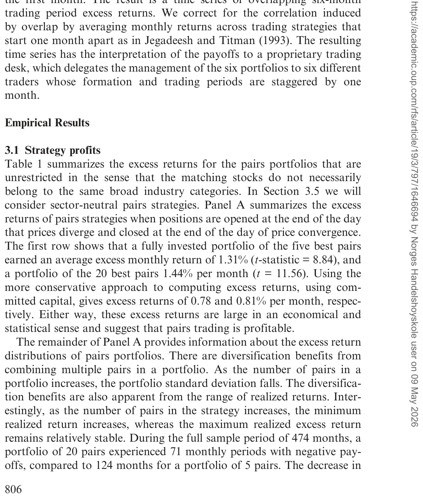
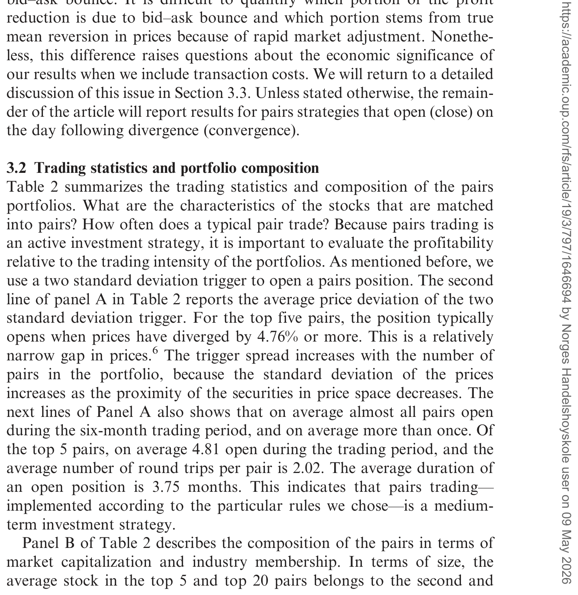
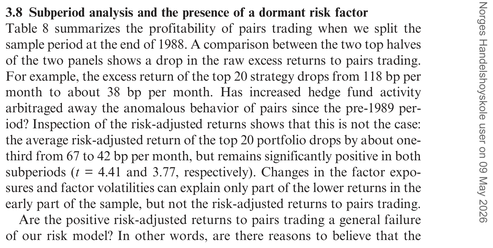
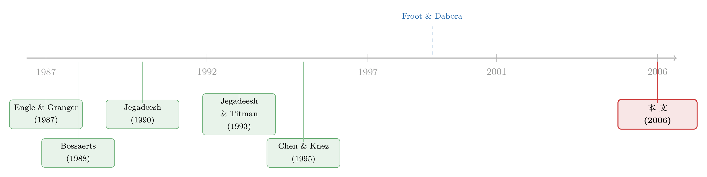

赢家做空，输家做多：一条简单到「不该」赚钱的套利规则
本文读的是 Gatev, Goetzmann & Rouwenhorst (2006, Review of Financial Studies)：用 1962–2002 年的日度数据，他们把股票两两配对、在价差拉大时「做空赢家、做多输家」，这条朴素到近乎可笑的规则，给出了最高约 11% 的年化超额收益——而且它既不是简单的均值回归，也躲得过常见的风险因子。作者把这份利润读作市场为「维护一价定律」付给套利者的报酬。
1 一个「不该」成立的策略
先讲一个华尔街的老段子。
上世纪八十年代中期，摩根士丹利的 quant 主管 Nunzio Tartaglia 召集了一队物理学家、数学家和程序员，想用统计方法在股市里淘金。他们做的事情之一，是找出那些「价格历史上总是一起动」的股票对（pairs），然后写成纪律严明的过滤规则，交给自动交易系统执行——把交易员的「盘感」彻底踢出局。1987 年，这支团队据说替公司赚了 5000 万美元。
这套打法后来有了个名字，叫配对交易 (pairs trading)，是如今对冲基金和投行口中统计套利 (statistical arbitrage) 的鼻祖之一。它的逻辑简单到让人起疑：
找两只历史上「一起走」的股票。当它们之间的价差拉开时，做空涨上去的那只、做多跌下来的那只。如果历史会重演，价格终将收敛，套利者就赚到了这一口。
问题来了。如果美国股市在任何时刻都是有效的，那么这么一条只看过去价格、外加一点逆向投资常识的规则，风险调整后的收益就不该是正的。它没有用到任何基本面，没有现金流折现，没有内幕消息——它凭什么能赚钱？
这就是这篇论文要回答的张力所在。三位作者（其中 Goetzmann 和 Rouwenhorst 来自耶鲁）没有去全策略空间里翻箱倒柜地搜「最赚钱的参数」，而是尽可能朴素地把实务界对配对交易的描述照搬过来，做了一次长达四十年的体检。
2 怎么配对，怎么交易
整个实现分成两段：12 个月的形成期 (formation period) 用来配对，接下来 6 个月的交易期 (trading period) 用来交易。这两个窗口长度从研究一开始就定死了，作者特意没去调它——这一点后面会很重要。
配对怎么找？ 在每个形成期里，先剔除掉 CRSP 日度文件中那些「有任意一天没成交」的股票（这一步顺手筛掉了不流动的标的）。然后给每只股票算一条累计总收益指数 (cumulative total returns index)——注意是含股息再投资的「价格」。最后，为每只股票找一个搭档：在所有候选里，挑出那只让两条标准化价格序列的离差平方和最小的股票。
一句话：在标准化的「价格空间」里做最近邻匹配。作者说，这么做是因为它最贴近交易员自己的描述——他们要找的就是两只「一起动」的股票。
怎么交易？ 配好对之后，盯住历史距离最小的 top 5、top 20，以及作为对照组的 101–120 号（排在前 100 之后的那 20 对）。交易规则同样朴素：
- 当一对股票的价差拉开到超过 2 个历史标准差（标准差在形成期估计）时，开仓——做多便宜的、做空贵的，各一美元；
- 在价差下一次穿越（收敛）时平仓；
- 如果到交易期结束都没收敛，就在最后一天按市价了结。
接着，一个自然的问题是：怎么算这条策略的收益？因为配对头寸在六个月里可能开开关关好几次，作者把每对的多空头寸每日盯市，日收益按价值加权复利。用论文的记号写出来就是：
$$ r_{P,t} = \frac{\sum_{i\in P} w_{i,t}\, r_{i,t}}{\sum_{i\in P} w_{i,t}} $$
$$ w_{i,t} = w_{i,t-1}\,(1+r_{i,t-1}) = (1+r_{i,1})\cdots(1+r_{i,t-1}) $$
由于多空各一美元，这些盈亏天然就有了超额收益的解读。论文进一步区分了两个口径：一是按「投入资本 (committed capital)」算——哪怕这对股票整个交易期都没开仓，分母里也照样占着一美元；二是按「实际动用资本 (fully invested)」算——只用真正开了仓的对数当分母。前者更保守，后者更接近对冲基金灵活调度资金时的真实回报。
3 这条规则到底为什么「应该」work——一价定律与协整
到这里你可能觉得，这不就是个技术分析的花活儿吗？但真正关键的一步，是作者把它接上了一套严肃的定价语言：相对定价与一价定律。
资产定价可以分「绝对」和「相对」两种。绝对定价 (absolute pricing) 从基本面（折现的未来现金流）给证券估值，误差大、难度高。相对定价 (relative pricing) 只说一件事：两个互为紧密替代品 (close substitutes) 的证券，应该卖一样的价钱——但它不告诉你这个价钱该是多少。换句话说，相对定价允许经济里存在泡沫，只要求「同样的东西卖同样的价」。这就是 一价定律 (Law of One Price, LOP)，以及 Chen & Knez (1995) 放宽出来的「近似一价定律」。
这套语言的妙处在于：如果我们把「自然状态」定义成历史交易日构成的时间序列，那么「找两只价格一起动的股票」，就等价于「找两只历史状态价格几乎相同的证券」。配对交易于是变成了一次对美国股市一价定律的检验——而且检验的是最微观的市场：单只证券的市场。
更技术一点，作者借用了 Bossaerts (1988) 和 Engle & Granger (1987) 的协整 (cointegration) 框架。假设价格服从如下统计模型：
这个式子的含义是：如果 n 远大于 k，就存在一些只含两个非零坐标的协整向量——也就是说，某两只股票的「价差」会被那个平稳的 \(e_{it}\) 主导，从而回归到零。配对交易要捕捉的，正是这种暂时偏离、然后收敛的弱冗余 (weakly redundant) 关系。
关键直觉：作者不需要假设市场无效。协整框架说的是，某些资产相对于其他资产的线性组合是「弱冗余」的，它们价格的任何偏离都预期是暂时的、会回归的。利润来自于这种暂时偏离——而维护这种「不偏离太久」的状态，本身就是市场效率的一部分。
（这种「两个紧密替代品之间做相对价值套利」的思路，在债与股之间也有它的影子——可参见《同一家公司，股票和它的「违约保单」，真的在同一条船上吗？》，那里检验的是同一家公司的股票与信用之间的一价定律。）
4 主要结果：11% 从哪里来
现在揭晓那个让人起疑的数字。
在「无限制」配对（搭档不必同行业）下，top 20 组合的全投入超额收益是每月 1.44%（t = 11.56），top 5 是每月 1.31%（t = 8.84）。换算成年化，最好的组合大约 11%。即便用更保守的「投入资本」口径，top 5 和 top 20 也有每月 0.78% 和 0.81%。无论哪个口径，这个超额收益在经济上和统计上都大得惊人。
如表 1 所示，组合层面还有个有意思的细节：配对越多，分散化收益越明显——组合标准差下降，且最差月份的亏损在收窄，而最好月份的收益却相对稳定。在 474 个月里，20 对的组合只有 71 个月是负收益，而 5 对的组合有 124 个月为负。

Table 1: summarizes the excess returns for the pairs portfolios that are
这里藏着一个绕不开的质疑：会不会是「买卖价差反弹 (bid-ask bounce)」在作怪？ 当一只股票跌到 2 个标准差触发开仓，多半是因为它刚好成交在卖一价（bid）上；下一刻它弹回买一价（ask），价差「收敛」了，但这只是微观结构的幻觉，赚不到真钱。
作者的应对干净利落：等一天再开仓。把开仓推迟一个交易日（Panel B），top 20 的月收益从 1.44% 降到 0.895%（t = 9.29），top 5 降到 0.745%（t = 6.26）。收益确实掉了一截——说明买卖价差反弹贡献了一部分——但剩下的部分依旧又大又显著。这是这篇论文最关键的一道稳健性闸门：把最廉价的质疑先堵死。
5 不是均值回归，不是已知的风险
接着，一个更尖锐的问题是：配对交易的利润，会不会只是文献里早就记录过的反转（reversal）/ 均值回归换了个马甲？
毕竟，Lehmann (1990)、Jegadeesh (1990)、Conrad & Kaul (1989) 早就发现短期收益会反转——做空近期赢家、做多近期输家本身就能赚钱。配对交易看上去也是「买输家、卖赢家」。
但真正关键的区别在于：配对交易不是无脑买全市场的输家，它只在两只历史上高度协整的股票之间做多空。作者用自助法 (bootstrap) 构造了一个对照实验：随机给每只「触发开仓」的股票配一个搭档（而不是用最小距离匹配），看随机配对能赚多少。结果是，真实的配对收益显著高于这种随机配对下的「反转收益」——也就是说，利润里有一块是配对本身带来的，而不是单只股票的均值回归。
那会不会是常见的风险因子？作者把收益对市场、规模、价值、动量（Fama & French 1996、Carhart 1997 那套）以及一些低频的制度性因子（比如违约溢价、破产风险）都回归了一遍。结论是：这些因子解释不掉配对收益的主体。倒是浮现出一个未被识别的潜在共同因子 (latent risk factor)——它和配对交易的盈利在时间上相关，最近这些年相对「沉寂」。作者把这解读为：配对利润是市场付给套利者的、为维护一价定律而执行套利的报酬。
表 2 给出了配对的成交统计与组合构成——比如平均每对在六个月里开仓几次、持仓多久、收敛比例多高。这些「微观体检」帮我们看清利润到底来自频繁的小收敛，还是少数大反转。

Table 2: summarizes the trading statistics and composition of the pairs
6 数据窥探？一份「天然」的样本外检验
读到这儿，做实证的人都会皱眉：用历史价格搜出来的过滤规则，数据窥探 (data snooping) 几乎是原罪。你总能在四十年的数据里找到一条「看起来很赚」的规则。
作者这里有一手别人学不来的牌。他们 1999 年就完成并传阅了工作论文初稿，用的是截止 1998 年的数据。等到正式发表（2006），中间这几年就成了一个天然的留出样本 (holdout sample)。他们刻意不改任何参数，把原模型直接套到 1999–2002 的新数据上——
结果：top 20 全投入组合 年化平均超额收益 10.4%，年标准差仅 3.8%，Newey-West 调整后的 t = 4.82。和样本内的长期结果高度一致。
这个真·样本外检验有两层含义：其一，原来的结果不是某段特定时期的偶然产物；其二，公开传播这套策略，居然没有把它的收益特征「套利掉」——尽管业界对它充满好奇。这一点本身就耐人寻味（关于「公开之后异象会不会消失」，可对照《异象的消退，是被「套利」吃掉了，还是基本面自己缩水了？》的讨论）。

Table 8: summarizes the profitability of pairs trading when we split the
7 利润是真的吗——交易成本、卖空与破产
光有超额收益还不够，得问：扣掉摩擦还剩多少？
- 交易成本：作者用了相对保守的成本估计，配对利润在合理假设下依然为正——但要承认，2 个标准差的开仓阈值「不总能覆盖成本」，所以这条策略偏向那些交易成本低、且有能力做空的市场参与者。
- 卖空成本：做空一半的腿要付借券费（这正是 D'Avolio 2002 那条文献关心的）。卖空和交易成本确实会侵蚀收益的量级，但侵蚀不掉它的存在。
- 破产风险与多空不对称：作者提出一个机制——配对的一头（空头）可能破产概率稳定或下降，另一头（多头，即「输家」）可能暂时破产概率上升；利润来自多头那只「劫后余生」的特质破产风险被证伪。如果是这样，利润应当主要来自多头一侧。作者把多空分开测，正是为了看这个不对称在不在。
把这些摩擦叠在一起，配对交易在整个样本期、以及那四年真样本外里，对「交易成本低、能卖空」的参与者仍然有利可图。这是个诚实的结论：它没有声称人人都能赚到 11%，而是说，对一价定律的「执法者」而言，存在一份期望中的套利利润。
（这份「利润即风险报酬」的味道，和固定收益套利里「在压路机前面捡硬币」的隐喻异曲同工——参见《捡硬币的人，真的站在压路机前面吗？》。）
8 文献脉络
把这篇论文放回它的来路，能看得更清楚。
最早的两条线在 1980 年代末交汇。一条是 Engle & Granger (1987) 把协整这个工具交给了计量经济学；另一条是 Bossaerts (1988) 发现美国股价存在共同的非平稳成分、在组合层面是协整的。这两块拼图，给「价差会回归」提供了统计学的地基。Bossaerts & Green (1989) 与 Jagannathan & Viswanathan (1988) 则在均衡资产定价里容纳了非平稳的共同因子。
另一条平行的线是短期可预测性：Conrad & Kaul (1989)、Lehmann (1990)、Jegadeesh (1990) 记录了短期反转，Jegadeesh & Titman (1993, 1995) 则把动量与反转、过度反应讲透。配对交易看似站在这条线上，但作者要论证的恰恰是「我们不一样」。
市场整合与套利的视角来自 Chen & Knez (1995)：紧密整合的市场，应给相似支付以相近价格。Froot & Dabora (1999) 用「孪生股票 (twin stocks)」（同一现金流、不同市场挂牌）检验了市场分割——这几乎是配对交易的「实验室纯净版」。

这篇论文的位置，就在这两条线的交点上：它用协整的语言把「相对价值套利」严格化，又用四十年的数据把它当成一价定律的实证检验，最后指向一个未被现有因子捕捉的潜在共同风险。
9 评论与延伸（Q&A + 研究方向）
(a) 几个可能的疑问
Q：配对交易和「买输家卖赢家」的反转策略，本质区别到底在哪？
反转策略是在单只股票层面下注其历史收益会回归；配对交易是在两只协整股票的价差上下注。作者的自助法显示，把最小距离匹配换成随机匹配后收益大幅缩水——说明利润里有一块专属于「配对」，而非单股均值回归。前者赌的是个股，后者赌的是「两者之差」。
Q：那个 11% 会不会就是买卖价差反弹的幻觉？
这是最该担心的。作者用「延迟一天开仓」直接回应：top 20 月收益从 1.44% 降到 0.895%，确实掉了，但仍有 t = 9.29 的显著性。所以反弹贡献了一部分，但远不是全部。
Q：用日度价格做协整，统计上靠谱吗？会不会是「伪协整」？
作者自己点出了伪相关价格 (spuriously correlated prices) 的风险——在庞大的股票宇宙里，任意两只股票的线性组合「弱相依」几乎总能在样本内找到，但未必是真协整。这正是为什么样本外检验（1999–2002，t = 4.82）如此关键：伪协整通常活不过样本外。
Q：既然策略 1999 年就公开了，为什么没被套利掉？
论文给出的事实是没有——样本外收益与样本内一致。一种解读是，执行这条策略需要低交易成本 + 卖空能力，门槛把多数人挡在外面；另一种是它承担了一个潜在的共同风险因子，收益是这份风险的报酬，而非免费午餐。
Q：利润是来自多头还是空头？这有什么含义？
作者通过破产风险的不对称机制预测，利润应主要来自多头（那只「输家」若幸存，其特质破产风险被证伪带来收益），并把多空分开测来验证。若利润高度集中在多头，说明它和「困境股的幸存溢价」更像，而不是对称的价差收敛。
Q：这是否意味着市场无效？
不必然。作者明确说，协整框架下的结果与某些均衡定价模型相容（如 Bossaerts 1988 那类价格协整模型）。利润可以是「维护一价定律」的执法报酬——市场之所以「近似有效」，恰恰是因为有人靠做这件事赚钱。
(b) 几个可能的研究问题与提案
1. 把配对交易搬到公司债市场。 【经济故事】同一发行人的不同债券、或评级与久期相近的「孪生债」，在一价定律下应高度协整；信用市场摩擦更大、做市商库存约束更强，价差偏离可能更久、更可交易。【可行性】中。需要 TRACE 成交数据 + Mergent FISD 的债券特征做匹配；识别上要小心流动性差异本身造成的价差，可用「同一发行人两只债券」的设计来剥离信用风险（思路类似《同一个发行人的两只债券，戳破了「火线甩卖」的幻觉》）。
2. 那个「潜在共同因子」到底是什么？ 【经济故事】作者发现配对利润和一个未识别的潜在因子相关，且近年沉寂。如果能把它对上套利资本的供给（对冲基金 AUM、券商资产负债表松紧、融资流动性），就能把「利润是套利者风险报酬」从隐喻变成可检验的命题。【可行性】中。需要对冲基金/Primary dealer 的资产负债表代理变量；识别可用融资冲击（如季末、监管比率收紧）做工具。
3. 外资持有人与跨市场配对。 【经济故事】Froot & Dabora 的孪生股票说明市场分割会撑开价差。若一只股票的边际持有人结构（尤其外资占比）发生外生变化，配对收敛速度是否随之改变？这能把「谁在执法一价定律」具体到投资者类型。【可行性】中偏低。需要跨国持股微观数据 + 可投资度（investability）变化作为外生冲击（思路可借鉴《外资真是「蝗虫」吗？》）。
4. 交易成本异质性下的「谁能赚」。 【经济故事】论文已指出利润偏向低成本、能卖空的参与者。用更细的成交成本数据，可以量化「在多高的成本下配对利润恰好归零」，从而刻画这条套利的「自然边界」。【可行性】高。需要机构成交成本数据（如 Keim & Madhavan 1997 那类）或现代的 transaction cost analysis 数据，做一个利润对成本的敏感度断点。
10 我的判断
这篇论文的贡献，不在于「发现了一条赚钱的策略」——华尔街早就在用——而在于它把一条业界土法，翻译成了对一价定律的严肃实证检验，并守住了实证研究里最难守的两道关：买卖价差反弹（延迟一天开仓）和数据窥探（一份近乎完美的真样本外）。在 2006 年，这是把「统计套利」搬进金融经济学殿堂的奠基性工作之一。
要说对识别的担忧，我有两点。其一，那个「潜在共同因子」终究是残差里的故事——它解释了收益的时间变化，却没有被独立测量出来；「利润是执法一价定律的报酬」是个漂亮的叙事，但严格说仍是事后归因。其二，破产风险不对称这条机制虽然被分开测了多空，却很难和「困境股幸存溢价」彻底切割——利润究竟是套利报酬，还是某种被错标价的尾部风险补偿，留了一个口子。
后续我最想看到的，是把这个潜在因子钉到一个可观测的套利资本约束上：当融资流动性收紧、套利者被迫去杠杆时，配对价差是否更宽、收敛是否更慢、事后利润是否更高？如果能做出来，「市场有效是被套利者用真金白银维护出来的」这句话，就不再只是一个优雅的结尾。
参考文献
- Bossaerts, P. (1988). Common Nonstationary Components of Asset Prices. Journal of Economic Dynamics and Control 12, 347–364.
- Bossaerts, P., and R. Green (1989). A General Equilibrium Model of Changing Risk Premia: Theory and Evidence. Review of Financial Studies 2, 467–493.
- Carhart, M. (1997). On Persistence in Mutual Fund Performance. Journal of Finance 52, 57–82.
- Chen, Z., and P. Knez (1995). Measurement of Market Integration and Arbitrage. Review of Financial Studies 8, 287–325.
- Conrad, J., and G. Kaul (1989). Mean Reversion in Short-horizon Expected Returns. Review of Financial Studies 2, 225–240.
- D'Avolio, G. (2002). The Market for Borrowing Stock. Journal of Financial Economics 66, 271–306.
- Engle, R., and C. Granger (1987). Co-integration and Error Correction: Representation, Estimation and Testing. Econometrica 55, 251–276.
- Fama, E., and K. French (1996). Multifactor Explanations of Asset Pricing Anomalies. Journal of Finance 51, 131–155.
- Froot, K., and E. Dabora (1999). How are Stock Prices Affected by the Location of Trade? Journal of Financial Economics 53, 189–216.
- Gatev, E., W. N. Goetzmann, and K. G. Rouwenhorst (2006). Pairs Trading: Performance of a Relative-Value Arbitrage Rule. Review of Financial Studies 19(3), 797–827.
- Jegadeesh, N. (1990). Evidence of Predictable Behavior of Security Returns. Journal of Finance 45, 881–898.
- Jegadeesh, N., and S. Titman (1993). Returns to Buying Winners and Selling Losers: Implications for Stock Market Efficiency. Journal of Finance 48, 65–91.
- Jegadeesh, N., and S. Titman (1995). Overreaction, Delayed Reaction, and Contrarian Profits. Review of Financial Studies 8, 973–993.
- Lehmann, B. (1990). Fads, Martingales and Market Efficiency. Quarterly Journal of Economics 105, 1–28.